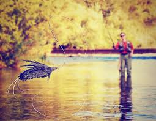

My Outdoor Adventures
I love spending time outdoors, especially when it comes to fishing. There's something peaceful about being on the water and waiting for a bite.

Favorite Fishing Spots
- Moyie River, Idaho
- Bull Lake, Montana
- Kootenai River, Idaho
Fishing Tips
Here are a few tips I've learned over the years:
- Be patient - sometimes it takes a while to get a bite.
- Use the right bait for the type of fish you're trying to catch. I enjoy fly fishing on the surface personally.
- Pay attention to the weather - fish are more active during certain conditions.
Back to Home